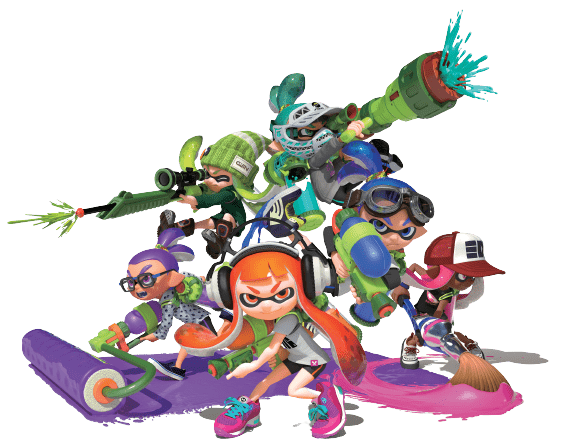

Splatoon (スプラトゥーン, Supuratūn) es un videojuego de género shooter en tercera persona desarrollado y publicado por Nintendo para Wii U en el año 2015. Es un acrónimo de Splat (una onomatopeya inglesa que alude a un disparo) y Platoon (que en inglés significa pelotón, pandilla). Su jugabilidad se centra en la guerra entre inklings, utilizando tinta como arma para cubrir la mayoría del territorio. Al finalizar cada partida, un gato árbitro decide al ganador, también hay distintos tipos de combates competitivos.
No importa si dominas los combates territoriales o si te metes en la piel de un Inkling por primera vez; el juego Splatoon2 es para ti y para todos. Un juego familiar, competitivo, colorido y divertido. Aquí encontrarás todo lo que necesitas saber.